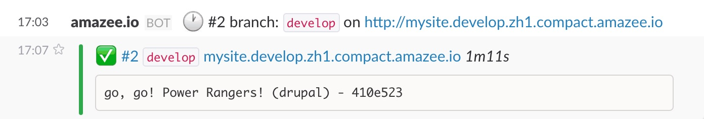

Push local site to development server
So you have your Drupal Site locally running with following the Step-by-Step guide and would like now to push it to an amazee.io development server? Then you are correct here!
- Step 0: Setup of development server
- Step 1: Use full fledged settings.php files
- Step 2: Extended Drush Configuration Files
- Step 3: Create .amazeeio.yml file and adapt
sitegroup - Step 4: Let's test!
- Step 5: Your first deployment
- Step 6: Synchronize local database to the develop site
- Step 7: Synchronize local files to the develop site
- Step 8: There is no more step
- But wait: How about other sites like production?
Before we can do the first push, we need to configure some more things, no worries, they are all very straight forward to use.
Step 0: Setup of development server
We need to set you up with the required things first. We are working hard to fully automate this step and make it as easy as everything else within amazee.io, but for now we need to know from you:
- SSH-Public Keys of everybody that should get access to the development server
- The URL of the Git repository which will host the Drupal Code (
git@example.com:test/test.git) - The Git branch you would like to use as your development server (in this example we will use
develop, but it realy can be any name!) - Give our deployment systems access to the Git repository (see Grant access to your sourcecode on how to do that)
- Main Domain (e.g. example.com)
- Redirect Domains - Domains which will be redirected to the main domain (e.g. www.example.com)
- PHP Version - We support 7.1
- Solr - If you need Solr you can choose between following versions 3,5,6
- Webroot - If you have a different webroot than the main directory of your git repository (e.g.
publicorweb)
That's it! You can actually continue with Steps 1-3 even though we didn't set up everything on our side yet.
Step 1: Use full fledged settings.php files
During the Step-by-Step process we just added some lines to your existing settings.php file. Even though this works great, we suggest to use our provided settings.php examples. Find them here.
If you don't have existing custom settings in your settings.php file, it's perfectly fine to overwrite an existing settings.php file with the provided one from us. If there are settings already, we suggest to move them either to all.settings.php (if you need them on development and production sites) or to development.settings.php or to production.settings.php (depending where you need them).
After adapting the settings.php files, test that your Local Drupal site still works, the Docker based environment fully understands the multi settings.php files.
Step 2: Extended Drush Configuration Files
We will use Drush later to synchronize our sites, but we need to tell Drush about our remote sites first.
This happens with a file called aliases.drushrc.php which needs to be placed inside a folder called drush in your root folder of your git repository.
You can find the file here: Drupal 7 & Drupal 8
While you are on it, we also suggest to adapt the drushrc.php file you probably during the step-by-step guide. Please replace the content of it with these: https://github.com/amazeeio/drupal-setting-files/blob/master/Drupal8/drush/drushrc.php (it's the same for Drupal 6, 7 or 8).
Step 3: Create .amazeeio.yml file and adapt sitegroup
The .amazeeio.yml file tells the amazee.io systems about deployment tasks and more. These tasks are super powerful and allow to automate almost everything you can imagine. You can find more about them at .amazeeio.yml file. As it takes a bit time to figure out all the possibilities, we suggest to just use these files as a start, they will clear the cache and run db-update on every deployment.
Drupal 7: https://github.com/amazeeio/drupal-setting-files/blob/master/Drupal7/.amazeeio.yml
Drupal 8: https://github.com/amazeeio/drupal-setting-files/blob/master/Drupal8/.amazeeio.yml
The .amazeeio.yml file needs to be placed in the root directory of your git repository.
Please adapt the sitegroup in that yml file to the one you got from the amazee.io team.
Step 4: Let's test!
Now it's time for testing: run drush site-alias inside your docker container and it should show you additional site aliases beside of @none, @self and default
🐳 drupal@mysite.docker.amazee.io:~/public_html (dev)$ drush site-alias
@none
@develop
@self
default
See the @develop site alias. This is the site alias of your development site were the develop branch is deployed to (or the branch name you told us to use in Step 0).
Now let's test the SSH access to this develop site. We do that with running drush @develop ssh, that will connect us via ssh to the development site:
🐳 drupal@mysite.docker.amazee.io:~/public_html (develop)$ drush @develop ssh
🔨 mysite_develop@zh1.compact.amazee.io:~/public_html $
Isn't it magic? No need to know any usernames, password or how servers are called. It all happens fully automatically.
btw: if it does not work, no worries, hit us up in our Slack Channel and we help you right away.
Step 5: Your first deployment
Ok here we go, we will do the first deployment. We hope you are as excited as we are! 💃
In order to deploy on the develop site we just need to git push into it. And everything will happen from there.
The easiest way is to commit an empty commit and push that with:
git commit --allow-empty -m "go, go! Power Rangers!"
git push
Example:
🐳 drupal@mysite.docker.amazee.io:~/public_html (develop)$ git commit --allow-empty -m "go, go! Power Rangers!"
[develop 410e523] go, go! Power Rangers!
🐳 drupal@mysite.docker.amazee.io:~/public_html (develop)$ git push
Counting objects: 1, done.
Writing objects: 100% (1/1), 190 bytes | 0 bytes/s, done.
Total 1 (delta 0), reused 0 (delta 0)
To git@github.com:amazeeio/mysite.git
980afa9..410e523 develop -> develop
A couple of seconds later you will see the deployment start message by our deployment bot in the Slack channel:
This message tells you that the deployment has started. You can see which branch is deployed, plus the URL of the site that this branch is assigned to.
In the background the deployment system will now checkout the Git code and run your deployment tasks. Read more at Automated Deployments on how they exactly work. Depending on how the amount and type of tasks you have defined, this can take either couple of seconds or couple of minutes.
As soon as the deployment is through the deployment bot informs us again. Most probably it will be a failed deployment that looks like this:
No worries, that is perfectly fine like that. In the Slack message we can see that the task drush -y updb has failed, the reason for that is simple: We don't have a database yet! So let's give our development site one:
Btw: We are working hard on not having a failed first deployment, as it is a bit confusing 🤓
Step 6: Synchronize local database to the develop site
The code is committed, but a vital part of every Drupal site is missing: The database.
As we have the database in our local development site, we can just easily synchronize it to the develop site via the command:
drush sql-sync @self @develop
Example:
🐳 drupal@mysite.docker.amazee.io:~/public_html (dev)$ drush sql-sync @self @develop
You will destroy data in dev1.compact.amazee.io/amazee_io and replace with data from drupal.
Do you really want to continue? (y/n): y
Starting to dump database on Source. [ok]
Database dump saved to /var/www/drupal/drush-backups/drupal/20160818211446/drupal_20160818_211446.sql.gz [success]
Starting to discover temporary files directory on Destination. [ok]
You will delete files in mysite_develop@zh1.compact.amazee.io:/var/www/mysite_develop/tmp/drupal_20160818_211446.sql.gz and replace with data from /var/www/drupal/drush-backups/drupal/20160818211446/drupal_20160818_211446.sql.gz
Do you really want to continue? (y/n): y
Copying dump file from Source to Destination. [ok]
Starting to import dump file onto Destination database. [ok]
Now let's try another deployment, again with an empty commit:
git commit --allow-empty -m "go, go! Power Rangers!"
git push
This time the deployment should be all green and happy:

Click the URL in the Slack message and your site should load the first time, just without images missing.
But we can get them into very easy, you probably guessed it, with drush!
Step 7: Synchronize local files to the develop site
Like with the database, there is a command to synchronize files:
drush rsync @self:%files @develop:%files
Like drush sql-sync, this command will ask for a confirmation before it synces the files. Please make sure that the directories do not contain the string %files, but the correct folders for the files.
Here how it should look like:
🐳 drupal@mysite.docker.amazee.io:~/public_html/sites/default (develop)$ drush rsync @self:%files @develop:%files
You will delete files in mysite_develop@zh1.compact.amazee.io:/var/www/mysite_develop/public_html/sites/default/files and replace with data from /var/www/drupal/public_html/sites/default/files
Do you really want to continue? (y/n):
and a bad example:
🐳 drupal@mysite.docker.amazee.io:~/public_html/sites/default (develop)$ drush rsync @self:%files @develop:%files
You will delete files in mysite_develop@zh1.compact.amazee.io:/var/www/mysite_develop/public_html/%files and replace with data from /var/www/drupal/public_html/sites/default/files
Do you really want to continue? (y/n):
see the path /var/www/mysite_develop/public_html/%files which is wrong. If this is the case, Drush cannot figure out the files directory itself. For an easy workaround, just use drush rsync @self:sites/default/files @develop:sites/default/files instead.
Step 8: There is no more step
That's it! You successfully pushed a local site to a development server. Now you can develop locally and all you need to do is push your code and it will be deployed automatically.
BTW: if you want to synchronize the files and database down again from a development site to your local site, check out Synchronize Sites.
But wait: How about other sites like production?
That's the beauty of amazee.io: It's exactly the same. It's basically Step 5-7 just with the branchname you defined to be your production branch.
Or even easier: Instead of synchronizing the DB and Files from your local to the production site, you can also synchronize from a development to the production site, check out Synchronize Sites how that works.